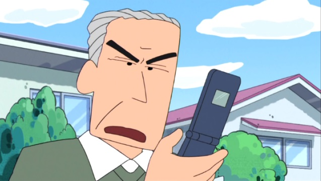
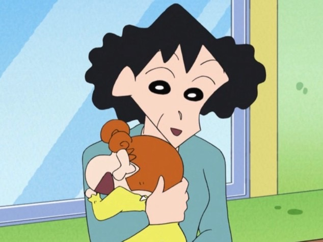
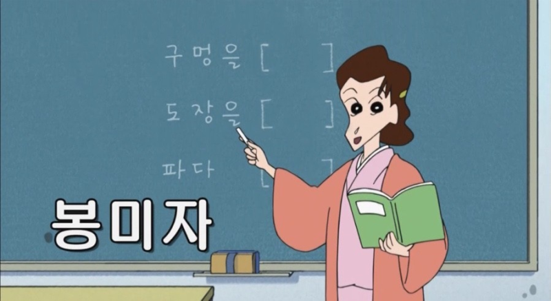
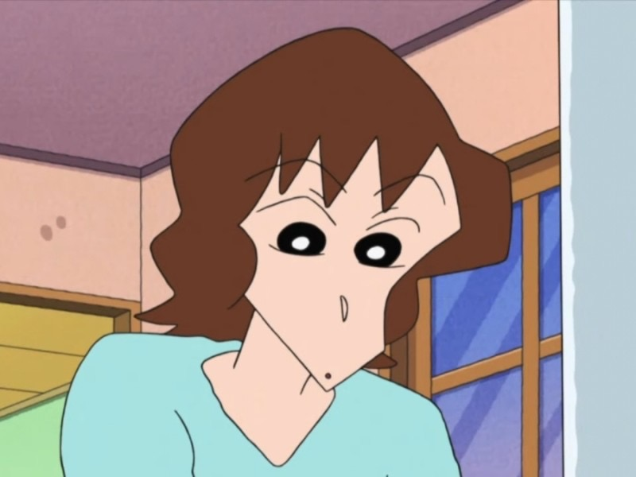

<환> 짱구네 외가 <영>

봉선달
- 나이 : 63살
- 좋아하는 것 : 녹차, 소설, 바둑, 신문, 뉴스
- 싫어하는 것 : 사돈어른의 철없는 행동, 술
- 별명 : 도시락머리, 두부머리, 바위머리
- 특징 : 전직 고등학교 교감이였으며, 현재는 퇴직하여 연금을 받으며 생활중이다. / 그로 인해 매우 보수적임.

이영선
- 나이 : 58살
- 좋아하는 것 : 요리
- 싫어하는 것 : 남편의 고지식적 행동, 사돈과의 다툼
- 특징 : 남편과 달리 사돈과의 사이가 좋음

봉미자
- 나이 : 35살
- 직업 : 중학교 국어교사
- 좋아하는 것 : 동생들과의 장난
- 싫어하는 것 : 맞춤법 오타
- 특징 : 미혼 / 동생들에게 잔소리를 많이 한다.

봉미소
- 나이 : 26살
- 직업 : 사진작가
- 좋아하는 것 : 사진찍기, 빈둥거리기
- 싫어하는 것 : 두 언니들의 잔소리
- 특징 : 한 동안 짱구네에 얹혀 살았으며, 전반적인 행동은 봉미선을 많이 닮았다. / 어릴 적 언니들의 자신들을 괴롭혔던 일들을 다 기록해놓았다.